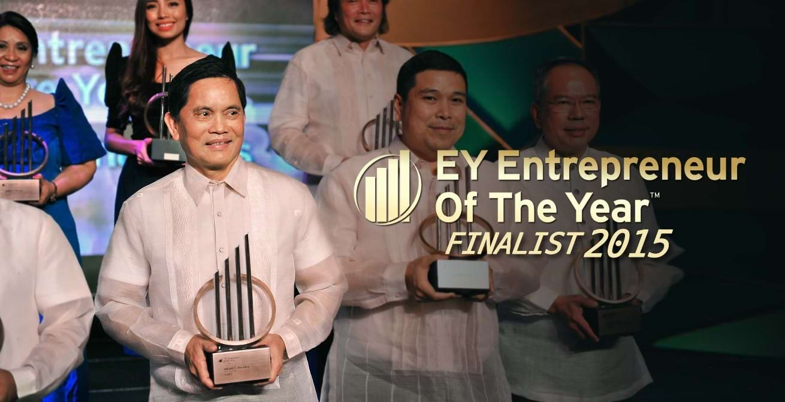
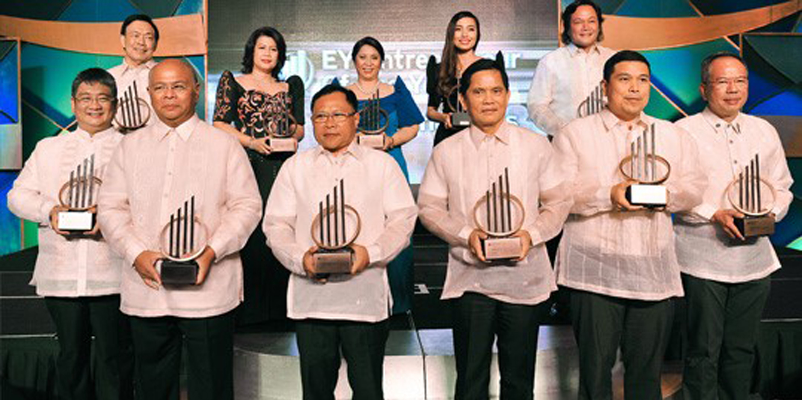
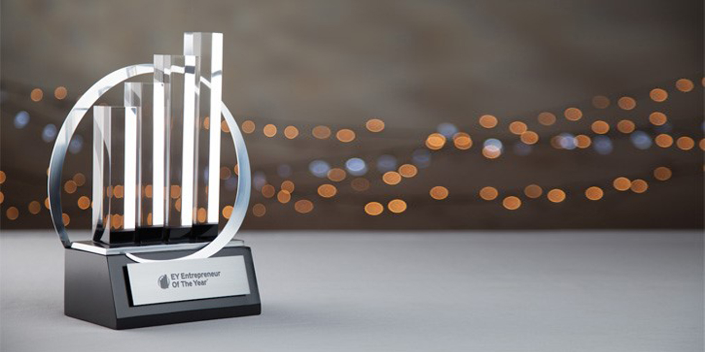
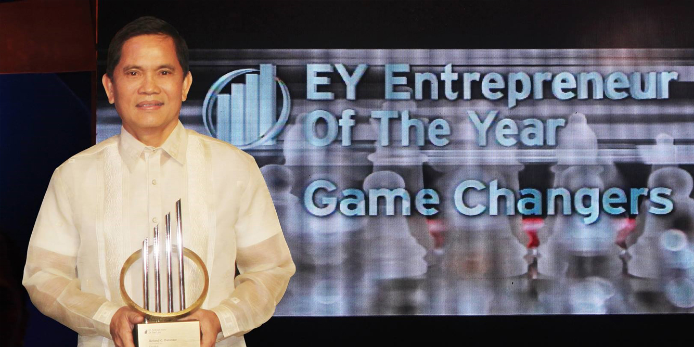

<section class="mt-[81px] py-20 bg-[#f7f7f7]">
    <div class="max-w-7xl mx-auto px-4">

        <!-- Section Header -->
        <div class="mb-12">
            <div class="max-w-5xl mx-auto flex items-start space-x-4">
                <div class="w-1 h-28 bg-green-500"></div>
                <div>
                    <h2 class="text-4xl font-bold text-gray-800">RRCD Land’s President and CEO qualified as EY
                        Entrepreneur of the Year 2015 Finalist</h2>
                    <p class="text-gray-600 text-base mt-1 max-w-2xl">
                        Mr. Roland Delantar, President and CEO of RCD Land Inc., competed for EY Entrepreneur of the
                        Year last October 14, 2015.
                    </p>
                </div>
            </div>
        </div>

        <!-- Centered Photo -->
        <div class="flex justify-center my-12">
            
        </div>

        <!-- Author/Meta Info -->
        <div class="flex justify-center mb-8">
            <span class="text-sm text-gray-700">
                <span class="font-semibold">Author:</span> &nbsp;&nbsp;
                <span class="font-semibold">Category:</span> Awards&nbsp;&nbsp;
                <span class="font-semibold">Date:</span> <span>October 14, 2015
                </span>
            </span>
        </div>

        <!-- Article Content -->
        <div class="max-w-3xl mx-auto text-gray-700 text-xs leading-relaxed px-4">
            The Entrepreneur of The Year Philippines is a program of the SGV Foundation Inc. that aims to recognize the
            achievements of outstanding entrepreneurs within successful, growing and dynamic businesses. The program was
            first introduced in the United States in 1986 by professional services firm Ernst and Young. At present, the
            program runs in more than 140 cities in over 50 countries. Each country sends its winner to the World
            Entrepreneur of The Year held annually in Monte Carlo.
            </p>
            <p class="mt-6">
                Since its inception in 2003, the Entrepreneur of The Year Philippines program has become one of the most
                prestigious events for the local business community. The program recognizes the strength, dynamism and
                resilience of Filipino entrepreneurs who take the lead in founding and operating sustainable, successful
                enterprises. It also aims to further inspire and motivate leaders to demonstrate the winning vision,
                determination and innovative mindset that empower them to transform industries and drive social and
                economic change.
            </p>
            <p class="mt-6">

                This year, the SGV Foundation is celebrating the 11th year of the program with the theme “Game
                Changers”. As reiterated by Program Director Atty. Antonette Tionko, “An entrepreneur understands that
                winning the game often means changing it for the better. Capitalizing on their strategic vision, they
                see the possibilities and opportunities that others cannot. They bring about positive transformation by
                applying creative innovation infused with dauntless determination. As game changers, entrepreneurs
                support a greater purpose, which is to improve the current business landscape.”

                <!-- photo -->
            <div class="flex justify-center my-12">
                
            </div>
            <p class="mt-6"></p>

            All nominees went through a strict financial data ranking system used by all Entrepreneur of The Year
            participating countries. The finalists were further evaluated by an independent panel of judges composed of
            distinguished business personalities. 11 outstanding finalists representing enterprises from diverse
            industries from various regions in the country were chosen, these finalists were Januario Jesus B. Atencio
            III (8990 Holdings, Inc.), Julieta G. Austria (Blue Macay Food Manufacturing Corporation), Martine D.
            Cajucom (Sunnies Studios), Roland C. Delantar (RCD Land, Inc.), Benjamin R. Lao (Lao Integrated Farms), and
            Wilson Tieng (Solar Entertainment Corp.).
            </p>


            </p>

            <!-- photo -->
            <div class="flex justify-center my-12">
                
            </div>

            <p class="mt-6">
                A highly distinguished panel of independent judges composed of leaders from government, business, and
                academe will evaluate nominees in areas such as innovation, financial performance, and personal
                commitment to their business, employees and community. The panel was chaired by Former Philippine Prime
                Minister Cesar E. A. Virata, Corporate Vice Chairman of Rizal Commercial Banking Corporation. The other
                panel members were former Foreign Affairs Secretary and SGV Senior Advisor Amb. Delia D. Albert,
                Department of Trade and Industry Undersecretary Zenaida Maglaya, CEO of Synergeia Dr. Milwida M.
                Guevara, Executive Director of the Philippine Business for Social Progress Rafael Cojuangco Lopa, and
                President and CEO of the Philippine Stock Exchange Hans B. Sicat.
            </p>


            <!-- photo -->
            <div class="flex justify-center my-12">
                
            </div>

            <p class="mt-6">
                As part of this year’s finalists, Mr. Roland Delantar embodies a leader who is passionate and determined
                in growing his company, RCD Land Inc., as one of the market leaders in the real estate industry. A game
                changer in real estate, RCD Land Inc. aims not only to grow in business but also to improve the lives of
                the Filipinos by building affordable yet quality homes in masterfully-planned communities. Bringing
                positive transformation through innovative and strategic designs, concepts, and approaches, RCD Land
                will continue to uphold Mr. Delantar’s passion and determination to encompass a greater purpose which is
                to improve the lives of Filipinos.
            </p>

            <p class="mt-6">
                To know more about RCD Land Inc., you may visit us at www.rcdland.com or contact us at 0917 700 1109 or
                (02) 617 5364.
            </p>